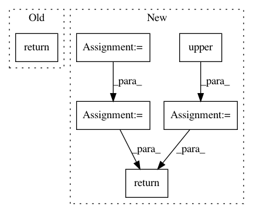

bd49927a7775cbb4c6c49a8610bfb49659439b25,api/data_refinery_api/views.py,TranscriptomeIndexList,get_queryset,#TranscriptomeIndexList#,1244
Before Change
serializer_class = OrganismIndexSerializer
def get_queryset(self):
return OrganismIndex.objects.distinct("organism", "index_type")
@method_decorator(name="get", decorator=swagger_auto_schema(manual_parameters=[
openapi.Parameter(
name="organism_name", in_=openapi.IN_PATH, type=openapi.TYPE_STRING,
After Change
ordering = ("-created_at",)
def get_queryset(self):
queryset = OrganismIndex.objects.all()
organism_name = self.request.GET.get("organism_name", None)
if organism_name is not None:
queryset = queryset.filter(organism__name=organism_name.upper())
length = self.request.GET.get("length", None)
if length is not None:
index_type = "TRANSCRIPTOME_{}".format(length.upper())
queryset = queryset.filter(index_type=index_type)
return queryset
@method_decorator(name="get", decorator=swagger_auto_schema(manual_parameters=[
openapi.Parameter(
In pattern: SUPERPATTERN
Frequency: 3
Non-data size: 6
Instances
Project Name: AlexsLemonade/refinebio
Commit Name: bd49927a7775cbb4c6c49a8610bfb49659439b25
Time: 2019-12-21
Author: davidsmejia@gmail.com
File Name: api/data_refinery_api/views.py
Class Name: TranscriptomeIndexList
Method Name: get_queryset
Project Name: AlexsLemonade/refinebio
Commit Name: 90e5fffcd65a786b8344d46246f31f14ecc98dbe
Time: 2018-07-02
Author: willvauclain.dev@gmail.com
File Name: api/data_refinery_api/views.py
Class Name: TranscriptomeIndexDetail
Method Name: get
Project Name: emedvedev/attention-ocr
Commit Name: 8858bd041f8d0fac28a45db47da4764f0dee3e52
Time: 2017-08-10
Author: edward.medvedev@gmail.com
File Name: aocr/util/data_gen.py
Class Name: DataGen
Method Name: convert_lex